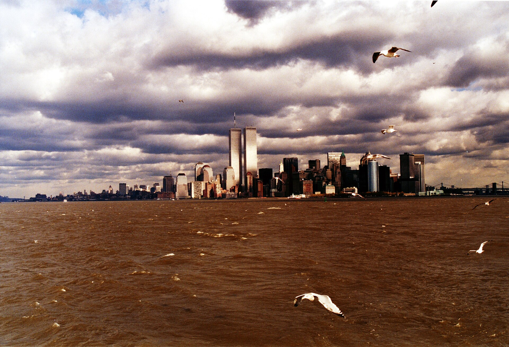
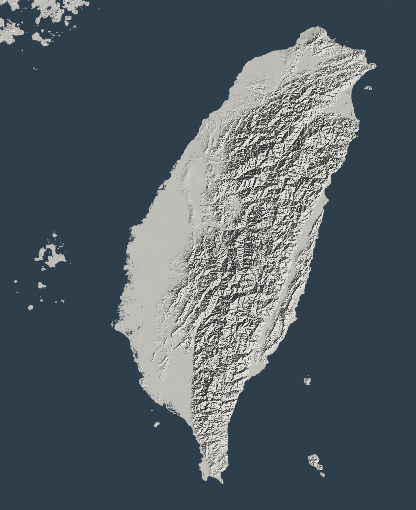
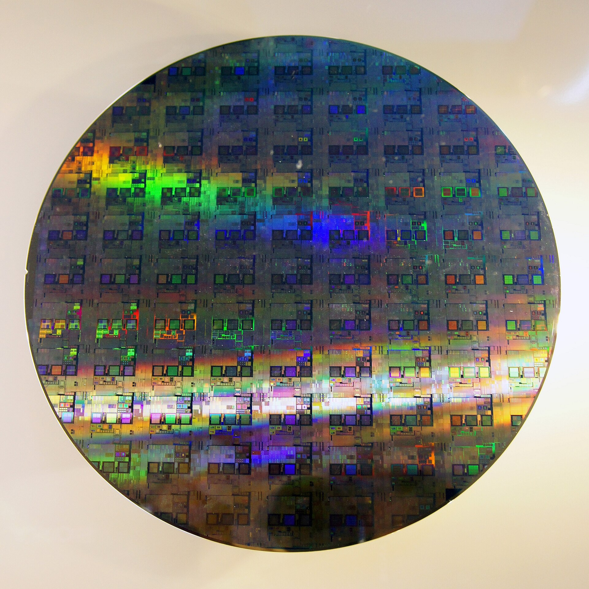
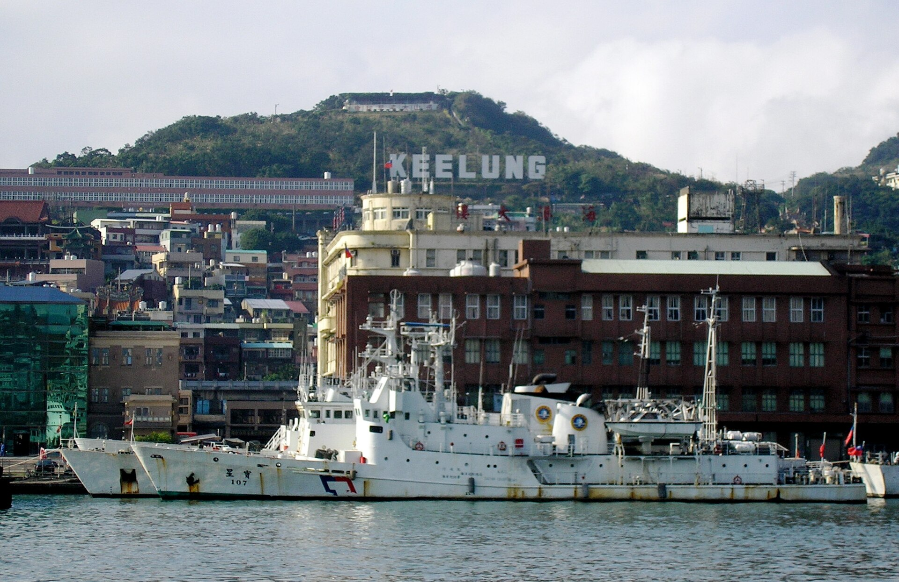

THE BOARD'S ONE CONDITION · APPROVAL CHAIN (1983)
TAIPEI → UNITED STATES → HSINCHU
THE BOARD'S STIPULATION
GO SHARE HIS PLAN WITH THIS U.S. ADVISOR
STEP 01 · PROPOSAL
SHARE HIS PLAN
ROBERT TSAO · PURE-PLAY FOUNDRY PLAN
STEP 02 · THE GATEKEEPER
THIS ADVISOR
ADVISING TAIWAN ALL THIS TIME
CONDITION
IF THIS GUY APPROVES OF THIS NEW PLAN ✓
STEP 03 · FULL AUTHORITY
BOARD'S PERMISSION
CHANGE THE BUSINESS HOWEVER HE SEES FIT
GREEN LIGHT UNLOCKED
TRANS-PACIFIC MISSION · TAIPEI (TPE) → NEW YORK (JFK)
DISTANCE: 12,500 KM · GREAT-CIRCLE ROUTE
DEPARTURE · TAIPEI, TAIWAN
FIRST FLIGHT TO NEW YORK ✈
TO TALK WITH THIS EXECUTIVE STAYING THERE
MAP: NATURAL EARTH GREAT-CIRCLE PROJECTION
NEW YORK CITY · THE PITCH MEETING & DINNER (1983)
ROBERT TSAO + THE U.S. CHIP EXECUTIVE

NEW YORK CITY · 1983
ACCORDING TO ROBERT TSAO
THE MEETING GOES REALLY WELL ✓
EVENING BRIEFING · MANHATTAN
DINNER
TOGETHER
TOGETHER
ON THE TABLE
DISCUSSING TSAO'S PROPOSAL IN DETAIL
Can a Taiwanese fab survive by manufacturing chips purely for other companies?
PHOTO: WIKIMEDIA COMMONS (1980s MIDTOWN MANHATTAN)
RETURN FLIGHT · NEW YORK → TAIPEI
ROBERT TSAO'S EXPECTATION
AFTER THE NEW YORK MEETING
FLIES BACK FEELING
ON TOP OF THE WORLD
ON TOP OF THE WORLD
FIRST-MOVER ADVANTAGE
AHEAD OF
EVERYONE ELSE
EVERYONE ELSE
Pioneering a brand-new semiconductor business model from Taiwan
INDUSTRY DISRUPTION
CHANGING THE WHOLE GAME IN THE CHIP BUSINESS
ACT V · WAIT — WHY ASK SOMEONE IN THE SAME INDUSTRY?
SANKET & SAM UNPACK THE 1983 DYNAMIC
SANKET'S QUESTION
ASKING A GUY IN THE SAME CHIP BUSINESS?
COMPANY A · HSINCHU
UMC
IN THE CHIP BUSINESS · ONLY IN TAIWAN

ADVISOR · UNITED STATES
U.S. EXECUTIVE
HE IS IN THE CHIP BUSINESS · IN THE U.S.

THE 1983 TECHNOLOGY GAP · U.S. SUPERPOWER vs. NEW ENTRANT TAIWAN
WHY THEY WEREN'T PEER RIVALS YET
THE SEMICONDUCTOR HIERARCHY IN 1983
TWO COMPLETELY DIFFERENT LEAGUES
TOP OF THE INDUSTRY · U.S.
SO FAR AHEAD OF EVERYONE
Leading 25,000 engineers at a global U.S. semiconductor titan
ADVISING TAIWAN ON HOW TO BREAK INTO CHIPS ↓
ENTRY LEVEL · 1983
TAIWAN: A NEW COUNTRY GETTING INTO CHIPS
UMC is only 1 year old, making simple consumer telephone dialer chips
THE PARADOX · WHY ADVISE A POTENTIAL COMPETITOR?
TWO REASONS
THE QUESTION
WHY IS HE ADVISING A COMPETITOR?
REASON 01 · TECH TIER
ADVISING ON THE OLD STUFF
REASON 02 · HERITAGE
AND AGAIN — HE'S CHINESE
CULTURAL ROOTS & THE SEMICONDUCTOR VALUE CHAIN (1983)
SHARED HERITAGE + CUTTING EDGE vs. LEGACY NODES
1 · GEOPOLITICS & SHARED HERITAGE
PEOPLE RUNNING TAIWAN ARE CHINESE
ADVISING THEM JUST TO “GET IT GOING”
2 · NOT THE EXACT THING HE'S DOING
TWO DIFFERENT TECH GENERATIONS

HIS U.S. COMPANY RIGHT NOW
THE CUTTING EDGE STUFF
Everyone in the U.S. wants to be on the cutting edge

WHAT HE ADVISES TAIWAN ON
STUFF THAT'S OLD
His U.S. company isn't interested in legacy nodes anymore
ADVISORY COMPENSATION & GOVERNANCE ROLE (1983)
PRO-BONO TECHNICAL COUNSEL
COMPENSATION LEDGER
ADVISING THEM FOR FREE
$0
NOT MAKING MONEY · NOT A SIDE GIG
“Doing it out of the goodness of his heart.”
FORMAL GOVERNANCE CHECK
NOT ON THE BOARD
OR ANYTHING
OR ANYTHING
He holds no formal UMC board seat and takes no fee — yet his word carries decisive weight with Taiwan's officials.
OFFICIAL STATUS
JUST ADVISING
ACT VI · RETURN TO TAIPEI & THE SUDDEN REVERSAL (1984)
THE BOARD CHANGES ITS MIND

BACK HOME IN TAIWAN
TO HIS SURPRISE…
Between the New York dinner and Taipei, the room turned ice cold.
UMC BOARDROOM SHIFT
THE BOARD IS NOT FEELING THIS IDEA ANYMORE
BEFORE NEW YORK
EXCITED BEFORE (“YES”)
NOW IN TAIPEI
DON'T WANT TO TRY IT AT ALL ✗
PHOTO: WIKIMEDIA COMMONS (1980s TAIPEI)
CLOSED DOORS · HSINCHU & TAIPEI (1984)
CLASSIFIED BOARD DELIBERATIONS
HE TRIES TO FIND OUT WHAT HAD HAPPENED…
ACCESS DENIED
STONEWALLED
SILENCE
NO ONE IS TELLING HIM EXACTLY WHY
THE BOARD TURNED AGAINST THIS IDEA
THE LEVERAGE PROBLEM · YOUNG HIRED CEO vs. STATE-BACKED BOARD
UMC · 1984
JUST A CEO · RECENTLY HIRED · VERY YOUNG
ZERO VOTING LEVERAGE
DOESN'T HAVE OWNERSHIP IN THE COMPANY
CANNOT MOVE THINGS OR CONVINCE OTHER PEOPLE
FINAL DIRECTIVE · UMC BOARD OF DIRECTORS · HSINCHU, TAIWAN
MEMORANDUM TO: ROBERT TSAO, CHIEF EXECUTIVE OFFICER
UNITED MICROELECTRONICS CORP. · BOARD DIRECTIVE (1984)
THE BOARD IS TELLING HIM:
CASE CLOSED · 1984
ORDER 01 · THE PURE-PLAY FOUNDRY PROPOSAL
DROP THIS WHOLE THING HE CAME UP WITH
ORDER 02 · STATUS QUO MANDATE
FOCUS ON THE BUSINESS LIKE HE IS MEANT TO RUN IT
— HOW HE WAS RUNNING IT BEFOREHAND.
TRANS-PACIFIC TRIP
ROBERT GETS ON THE FIRST FLIGHT TO NEW YORK
NEW YORK PITCH
“AT LEAST ACCORDING TO ROB TSAO…”
SANKET · QUESTION
“UMC IS ASKING THIS GUY WHO'S ALSO IN THE SAME BUSINESS?”
SANKET · GEOGRAPHY
“HE'S IN THE U.S. — BUT UMC IS ONLY IN TAIWAN?”
SAM · THE SCALE GAP
“HE'S JUST SO FAR AHEAD OF EVERYONE…”
SANKET · THE PARADOX
“WHY IS HE ADVISING A COMPETITOR?”
SAM · THE ANSWER
“HE'S ADVISING THEM ON THE OLD STUFF. AND AGAIN, HE'S CHINESE.”
LEGACY vs. FRONTIER
“HIS COMPANY IS NOT INTERESTED IN THAT — EVERYONE WANTS THE CUTTING EDGE.”
U.S. CHIP GIANTS
FOCUSED ON THE CUTTING EDGE
SANKET · ROLE CHECK
“HE'S NOT ON THE BOARD OR ANYTHING — JUST ADVISING.”
BACK TO THE STORY · TAIWAN
“TSAO COMES BACK TO TAIWAN… BUT TO HIS SURPRISE…”
NO LEVERAGE
“HE'S JUST A CEO — RECENTLY HIRED, VERY YOUNG.”
THE VERDICT
NO OWNERSHIP TO CONVINCE THE BOARD